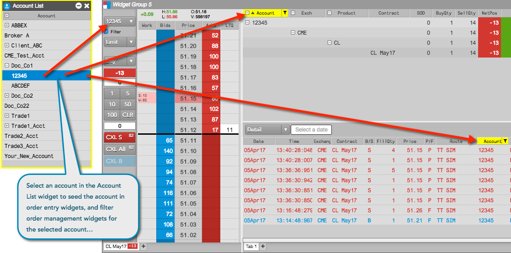
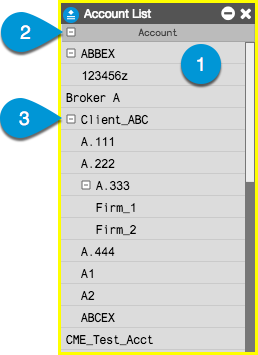

The Account List widget provides the ability to quickly seed order entry screens and filter order and fill management widgets with specific accounts. Selecting an account in the Account List seeds and filters the relevant widgets open in your workspace. This gives you the ability to manage a long list of accounts and tailor your workspace to your trading needs. The account selection and filters remain when you save and reopen your workspace.

Specifically, the Account List seeds the account field in the following order entry widgets:
The Account List widget also filters the Accounts column in the following order management widgets:
Note: The Account List selection only impacts widgets currently open in your workspace. Newly opened widgets will not reflect what is currently selected in the Account List.
To customize which widgets are impacted in your workspace, you can check (enable) the Ignore global Account List broadcasts setting in an order entry widget, order management widget, or an additional Account List widget to ignore account selections made in the Account List.
To open the Account List widget, click Widgets in the workspace title bar and select Miscellaneous | Account List.
The Account List widget consists of the following:
